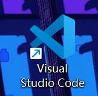
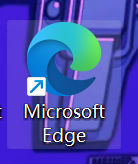
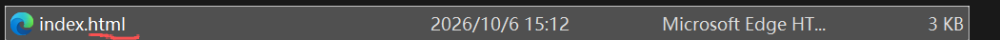
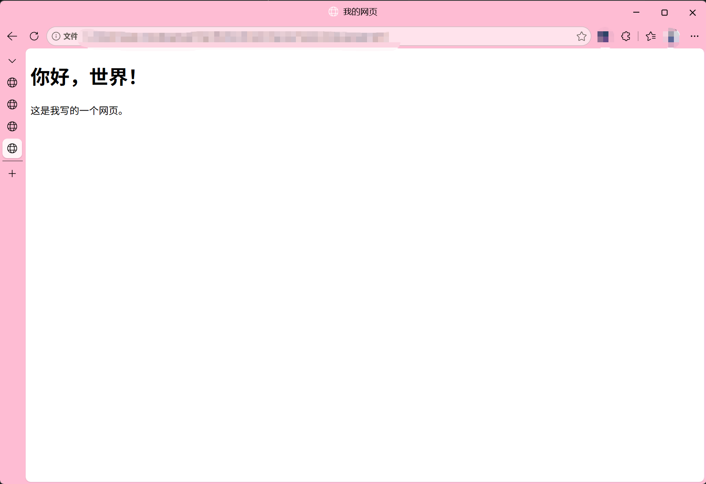
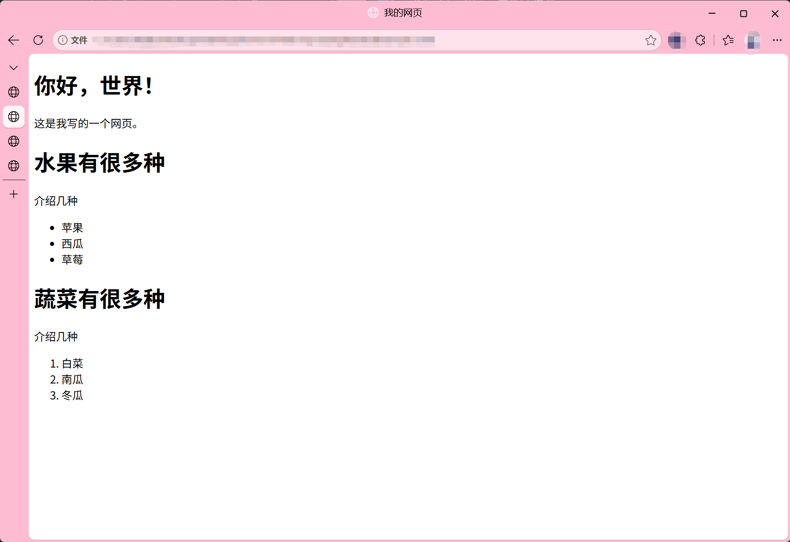

本教程是本人（Vader-002、一亿气卡）从零开始学习前端的时候编写，技术力可能较低所以出现错误。
可以在github上联系Vader-002提出你的指正和建议。
可以在examples文件夹看到一系列示例html文件。
同时该教程本质是一系列的前端文件，所有的代码运行均在你的本地设备上，并且文件内对网络的交互都已确保安全，我无法获取你的任何信息，请放心。
本篇目仅使用html编写，以和最初始的html编写匹配。
在这里你会学到你需要的前端基础知识

前端是网页或app界面里面，用户能看见、点击的部分，通过HTML、CSS、JavaScript等技术实现。
HTML负责内容的结构，也就是前端的整体框架结构。
CSS负责外观样式，也就是更具体的内容位置摆放，颜色等等。
JaveScript负责交互行为，例如点击、输入等等。
在三个技术中，我们先学习基础的HTML。
请先安装一个编程软件，例如VS Code等。注意请不要在word或者记事本上写程序，这样效率极低且可能会出现预期外的错误

同时保证你的电脑设备中有一个浏览器，例如Edge、Chrome

新建并命名一个文件夹，然后在编程软件中打开这个文件夹
然后创建一个初始html文件，请注意文件的后缀保证文件类型正确
同时需要提醒，文件和文件夹命名尽可能不要使用中文，因为部分机器对中文的编码不兼容可能导致代码无法运行

将下面的代码写入这个初始的html文件
<!DOCTYPE html>
<html>
<head>
<meta charset="UTF-8">
<title>我的网页</title>
</head>
<body>
<h1>你好，世界！</h1>
<p>这是我写的一个网页。</p>
</body>
</html>
显示效果如下图

我们来理解一下每一行。
<!DOCTYPE html>是文档类型声明告诉浏览器：“这是一个 HTML5 网页，请用标准模式来解析。”这是避免浏览器用老旧的兼容模式显示，导致错误的页面显示。
接下来，我们先要知道，html用标签来描述的，有些标签成对出现开始和结束标签，有些则是单独出现。
注意接下来的<html>和最后一行的</html>，这是典型的成对出现的标签，<html>是开始标签，</html>是结束标签。而html是根标签，整个网页的所有内容都在这里面
然后看<head>和</head>，head是头部标签，这是给浏览器、搜索引擎看的，不会在内部显示。
里面一般有
用来控制编码，以及连接上CSS与JavaScript文件。
<meta charset="UTF-8">是典型的单独标签，是设置字符编码为UTF-8，让中英文都正常显示避免乱码。charset是字符集，UTF-8则是标准基础的中文字符集编码。
<title>和</title>是网页标题，会显示在
<body>和</body>之间，才是正式的网页内容，比如
用户能看到的东西都在这里。
<h1>和</h1>是标题，标题大小有六个级别，1到6，1最大，6最小
<p>和</p>是段落内容浏览器会把里面的内容显示成一个段落，段落前后会自动留一点空隙，同时浏览器会根据浏览器宽度高度自行换行让整段话能正常显示。
换行需要在段落中用<br>，否则浏览器无法识别你的换行。
当然也可以使用<pre>和</pre> 包裹 <p>和</p> 保留段落在代码编写中的所有空格和换行。
你可以试着修改和增加标题、段落等等来体验对标题和段落的修改。
相似结构的html在example1可以找到。
前端页面展示不止需要文字，还需要列表和图片展示。
尝试把下面的代码写进你的html文件的<body>内部
<h1>水果有很多种</h1>
<p>介绍几种</p>
<ul>
<li>苹果</li>
<li>西瓜</li>
<li>草莓</li>
</ul>
<h1>蔬菜有很多种</h1>
<p>介绍几种</p>
<ol>
<li>白菜</li>
<li>南瓜</li>
<li>冬瓜</li>
</ol>
显示效果如下图：

列表类型有三个，nl、ol、li。ul是无序列表，默认显示园点；ol是有序列表，默认显示数字；li则是列表项，表示列表中的一项
这三个都是成对标签，注意内容要包裹在其中。
你可以试着增加新的列表和列表项体验对列表的修改。
相似结构的html在example2可以找到。
我们再学习图片的显示。
图片显示要使用独立标签<img>，例如，为了显示上面的示例图，本篇的html代码中使用了
<img src="imgs/main/example2show1.png" alt="示例2展示" width="800" loading="lazy">
来显示图片。
img是图片，有如下几个属性：
你可以试着在你的html里写一个<img>来显示你想显示的图片
相似结构的html在example3可以找到。
可以用<a>来跳转到别的位置.
基本用法是
<a href="目标地址">链接文字</a>
当然链接文字可以换成图片甚至别的块状元素，如
<a href="目标地址">
<img src="图片地址" alt ="图片">
</a>
就会以图片形式显示链接，如下面的文字和图片，在连接网络并稳定情况下，点击均会跳转到百度搜索引擎（www.baidu.com）
除了可以跳转网络上的网址，也可以用来跳转到别的需要的地方。
不同跳转目标和用法如下：
http://或https:// #id，注意跳转其他页面需要在#id前加上对应的页面的地址mailtotel和smsdownload，需要注意的是同域的文件可以直接下载，跨域（比如去别的网站）则需要考虑对话网站服务器的权限设置
下面是上述除了网络外部链接外的实现：
站内的其他页面：
跳转到本地的示例1文件